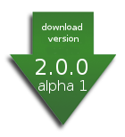

<h2>Disclaimer</h2> <code> Apache Ivy is an effort undergoing incubation at The Apache Software Foundation (ASF). Incubation is required of all newly accepted projects until a further review indicates that the infrastructure, communications, and decision making process have stabilized in a manner consistent with other successful ASF projects. While incubation status is not necessarily a reflection of the completeness or stability of the code, it does indicate that the project has yet to be fully endorsed by the ASF. </code> <h2>Download</h2> <div style="float:right;margin:10px;"><a href="http://people.apache.org/dist/incubator/ivy/2.0.0-alpha-1-incubating/"></a></div> The first release of Ivy within the Apache Incubator, <b>2.0.0-alpha-1</b>, is now available! Check the [[doc/releasenotes/2.0.0-alpha-1 release notes]]. Use the links below to download a distribution of Ivy from our repository. It is good practice to <a href="#VerifyReleases">verify the integrity</a> of the distribution files, especially if you are using one of our mirror sites. In order to do this you must use the signatures from our <a href="http://people.apache.org/dist/incubator/ivy/">main distribution directory</a>. Ivy is distributed as zip and tar.gz archives - the contents are the same. Please note that the tar.gz archives contain file names longer than 100 characters and have been created using GNU tar extensions. Thus they must be untarred with a GNU compatible version of tar. You can download Ivy binary and source distribution here: <code> http://people.apache.org/dist/incubator/ivy/ </code> <h2>Building from source</h2> What you can get here at the ASF is the latest sources from the Subversion repository: <code> svn co https://svn.apache.org/repos/asf/incubator/ivy/core/trunk ivy </code> Then to build Ivy from source, assuming you have ant 1.6.2+ and a jdk 1.4+ installed, then you only need to run the following command: <code> ant jar </code> Then you will find ivy.jar in <b>build/artifact</b>. <h2>Snapshot build</h2> We drop snapshot builds from time to time to help people give early testing, without going into the full release process. These snapshot builds are usually built from the trunk with no other testing than our unit tests suite. Here is where they can be found: http://incubator.apache.org/ivy/downloads/latest/ <h2><a name="VerifyReleases">Verify Releases</a></h2> It is essential that you verify the integrity of the downloaded files using the PGP signature or the SHA1 or MD5 checksums. The checksums are not as strong indicators as the PGP signature. The PGP signatures can be verified using PGP or GPG. First download the <a href="http://people.apache.org/dist/incubator/ivy/KEYS">KEYS</a> as well as the asc signature file for the particular distribution. Make sure you get these files from the <a href="http://people.apache.org/dist/incubator/ivy/">main distribution directory</a>, rather than from a mirror. Then verify the signatures using <code> % pgpk -a KEYS % pgpv apache-ivy-2.0.0-alpha-1-incubating-bin.tar.gz.asc </code> <em>or</em> <code> % pgp -ka KEYS % pgp apache-ivy-2.0.0-alpha-1-incubating-bin.tar.gz.asc </code> <em>or</em> <code> % gpg --import KEYS % gpg --verify apache-ivy-2.0.0-alpha-1-incubating-bin.tar.gz.asc </code> Alternatively, you can verify the checksums on the files. Unix programs called md5/sha1 or md5sum/sha1sum are included in many unix distributions. *sum is also available as part of <a href="http://www.gnu.org/software/textutils/textutils.html">GNU Textutils</a>. Windows users can get binary md5 programs from <a href="http://www.fourmilab.ch/md5/">here</a>, <a href="http://www.pc-tools.net/win32/freeware/console/">here</a>. <a href="http://www.slavasoft.com/fsum/">fsum</a> supports MD5 and SHA1. We highly recommend to verify the PGP signature, though. <h2>Latest stable version (not Apache)</h2> The latest stable version of Ivy is <a href="doc/releasenotes/1.4.1.html">1.4.1</a>, and is not an Apache incubating release, but a release done while Ivy was still hosted by jayasoft: <ul> <li><a href="http://www.jaya.free.fr/downloads/ivy/1.4.1/ivy-1.4.1-bin.zip">binaries</a></li> <li><a href="http://www.jaya.free.fr/downloads/ivy/1.4.1/ivy-1.4.1-src.zip">sources</a></li> <li><a href="http://www.jaya.free.fr/downloads/ivy/1.4.1/ivy-1.4.1-doc.zip">documentation</a></li> </ul> To have a quick overview of some of the changes in this version, check the <a href="doc/releasenotes/1.4.html">1.4.1 release notes</a> page. You can also download ivy jar and ivy.xml alone directly from the jayasoft site (useful especially for easy ant setup) using the following pattern: http://www.jayasoft.org/downloads/ivy/[revision]/[artifact]-[revision].[ext] This is used to auto install Ivy from internet, in the <a href="doc/tutorial.html">first tutorial</a>. Take a look at these examples if you want such an auto install feature in your own builds. The xsd for ivy files of the version is also available online at: http://www.jayasoft.org/downloads/ivy/[revision]/ivy.xsd To have info about the different kind of distributions, see <a href="choose-distrib.html">that page</a>. For previous version information and download, see the <a href="doc/releasenotes.html">release notes page</a> in the documentation.